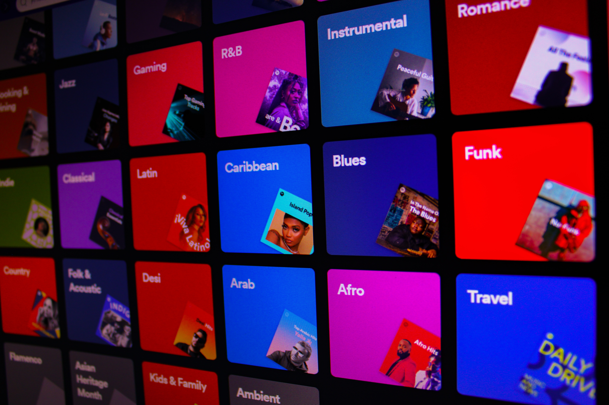

Sorting and Quality
Control System
Proposed a machine learning model with lower load time and conducted research on various existing machine learning models for transcription of visual cues like shape, color, size and texture to interpret a variety of fruits and determine their quality.
This system will classify fruits according to their category as well as their quality (fresh or rotten).
English Dictionary
Search Website
This project assists the users for searching the meaning of any word of the English language. In order to improve the user experience and provide diversified usability, this project has three versions.
Command-line program, GUI program, and Web version
Music Genre
Data Analytics

Preprocessed, analyzed and visualized the data to derive the correlation and dependency between different
musical attributes.
Amazon Alexa
Reviews Analysis

This model predicts the feedback of amazon alexa users based on the features such as ratings, variations and verified reviews.
Iris Flower
Classification
This model categorizes the iris flower into its three species based on features such as petal length, petal with, sepal length and sepal width. Algorithms used and accuracy achieved: Logistic Regression - 98.33%, Gaussian Naive Bayes - 96.67%, KNeighbours Classifier - 96.67%
Exploratory Data Analysis
on Global Terrorism Dataset

The Global Terrorism Dataset consists of data of terrorist activities in different parts of the world. There are around 1,81,692 entries of terrorist attacks.